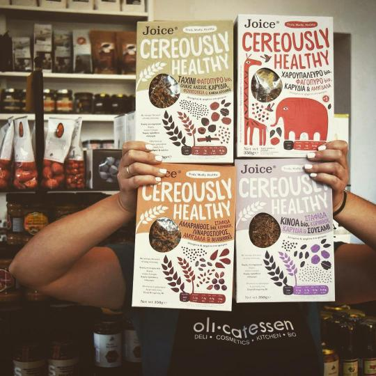
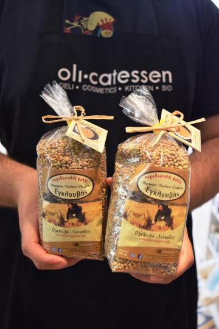

Στο Olicatessen, αγαπούν την έρευνα, την καινοτομία και τις καλές, φροντισμένες γεύσεις. Σε έναν υπέροχο χώρο στο ιστορικό εμπορικό κέντρο της Θεσσαλονίκης, διακοσμημένο από τους ίδιους τους ιδιοκτήτες, οι λάτρεις των καλών ελληνικών και deli προϊόντων, μπορούν να βρουν πολλούς κι επιλεγμένους κωδικούς, που δεν βρίσκει κανείς στα super market.

Στα καλύτερα προϊόντα τους – και μέσα σε αυτά που έχουμε δοκιμάσει επανειλημμένα – τα αλάτια και τα μπαχαρικά τους: καπνιστή πάπρικα και καπνιστό αλάτι Μεσολλογίου της σειράς «Salt Odyssey», τα εξαιρετικά «θεσσαλονικιώτικα» δημητριακά «Joice», τα ξηρά σύκα, από διάφορους παραγωγούς.

Οι λάτρεις των μαρμελάδων και των chutneys, θα έχουν να διαλέξουν από μια μεγάλη γκάμα (δοκιμάστε οπωσδήποτε τα chutney μανιταριών), ενώ μεταξύ των νέων εξαιρετικών προϊόντων του «Olicatessen», συγκαταλέγονται τα νέα γιαούρτια Δορκάδος της εταιρείας «Μίχος», καθώς και η ιδιαίτερη φακή «Εγκλουβής» (με τριπλάσιο σίδηρο και πιο έντονη, νόστιμη γεύση).
Μπείτε και ζητήστε επίσης, το μαστιχάτο ταχίνι και το χαλβά «Αχιλαδέλλη» από τη Λήμνο, τα ντολμαδάκια και τα ριζόγαλα της «Μάρως», το φυστικοβούτυρο Σερρών, τον τόνο Αλοννήσου, τις χειροποίητες μπάρες δημητριακών σε διάφορες γεύσεις, αλλά και τα καπαρόφυλλα, την ποικιλία βοτάνων, τσαγιών και βιολογικών και απεντομωμένων ροφημάτων, τη σειρά τους με προϊόντα χωρίς ζάχαρη (όπως την κρέμα φουντουκιού «Σουδή» από την Πέλλα), τα προϊόντα τρούφας και καρύδας τους, τα «εναλλακτικά» αλεύρια τους. Θα τα αναζητάτε, ξανά και ξανά.
Όσοι μαγειρεύετε, δείτε οπωσδήποτε τη συλλογή τους από ξύδια κάθε είδους (μπαλσάμικα, σύκου, ροδιού, πορτοκαλιού, με σκόρδο, με κάρδαμο, με πιπέρι, με μαστίχα Χίου, κ.ά.) και την επιλεγμένη σειρά από ελαιόλαδα (τα οποία μπορείτε να δοκιμάσετε εντός).
Στο «Olicatessen», δεν μένουν μόνο στα βρώσιμα προϊόντα. Μια πολύ καλοστημένη γωνιά με φυσικά σαπούνια και φυτικά καλλυντικά από 15 εταιρείες που τα ετοιμάζουν χειροποίητα, αλλά με - επίσης χειροποίητα – κεραμικά και ξύλινα κουζινικά σκεύη, συμπληρώνει τη γκάμα προϊόντων του deli παντοπωλείου. Και για όσους θέλουν να πρωτοτυπήσουν, εδώ αναλαμβάνουν το στήσιμο και την αποστολή επαγγελματικών δώρων.
*Olicatessen, Βίκτωρος Ουγκώ 4, τηλ.: 2313-030.286. Ανοιχτά: Δ. – Τε. – Σ. 9.00 – 15.00, Τρ. – Πε. – Πα. 9.00 – 21.00. Για πληροφορίες, γευσιγνωσίες και σεμινάρια, εδώ: https://www.olicatessen.gr/, https://www.facebook.com/olicatessenskg